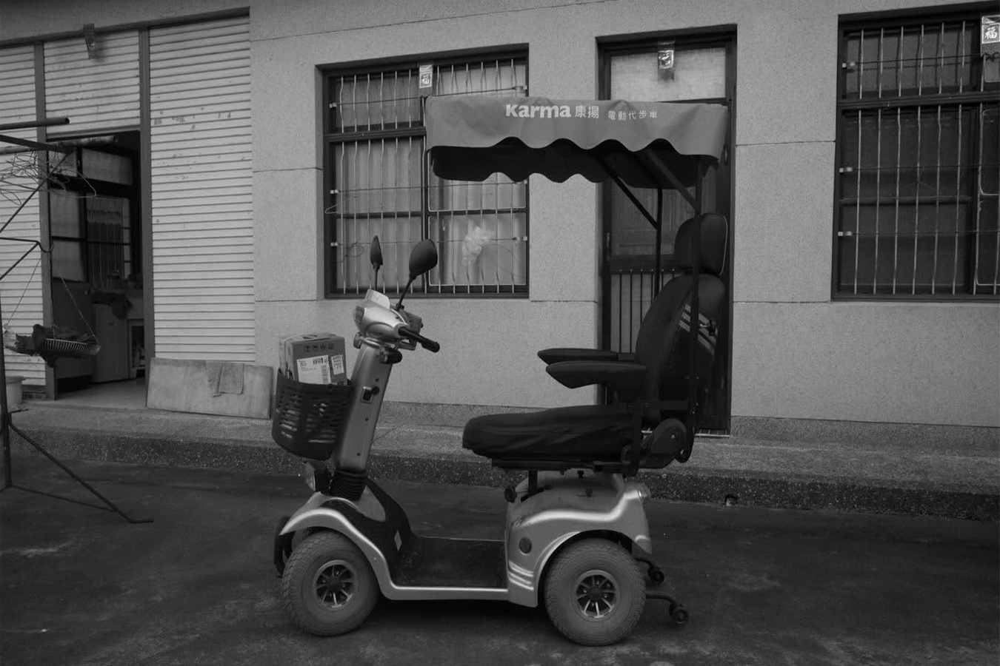

KWEIWEN TSENG

About
I derive the math, read the papers to train the networks, design the circuit boards, write the frameworks, and build the GUIs to tune them. I've lived on factory floors, sleeping on the ground next to operators and fixtures to resolve production issues. From earbuds to EVs, I've worked on everything with an audio I/O, and I still haven't found a problem that couldn't be solved with more MLP or more op-amps.
Bio
Born and raised in Kaohsiung, Taiwan.
Began my bachelor’s studies at National Sun Yat-sen University (NSYSU).
Began my master’s studies at National Chiao Tung University (NCTU).
Completed my substitute military service.
Joined Positive Grid as an electrical engineer.
Joined Tymphany as an electrical engineer, and left as a DSP engineer.
Joined Lava Music as a senior DSP engineer.
Got married, the luckiest man on the earth.
Joined Waves Audio as a senior DSP engineer.
Welcomed my beautiful daughter into the world.